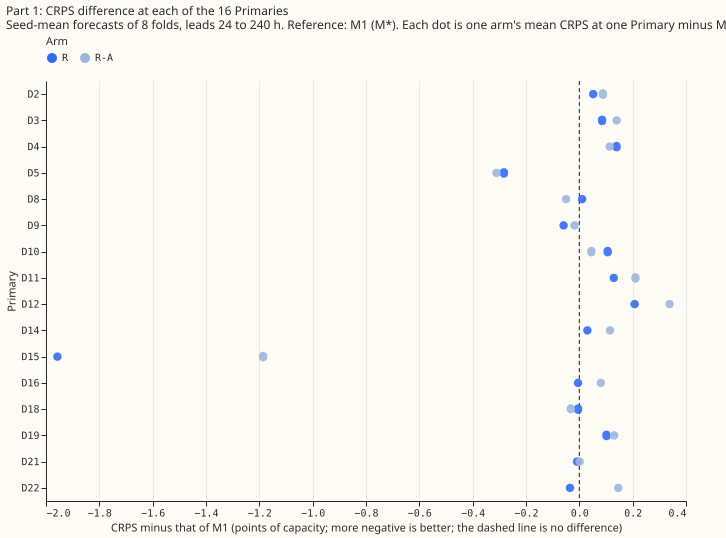
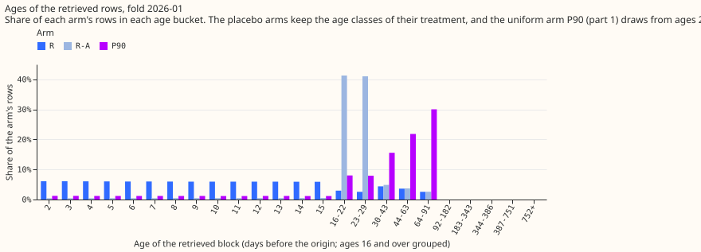
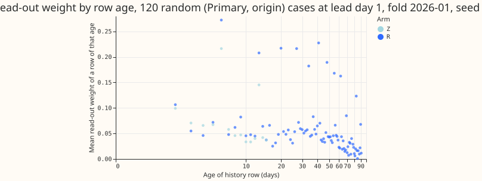
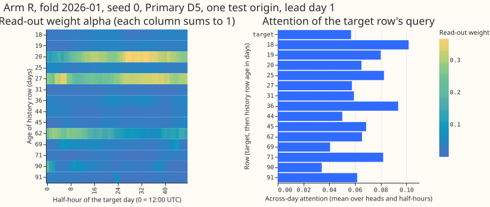
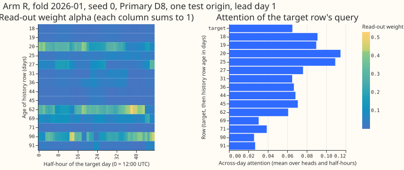
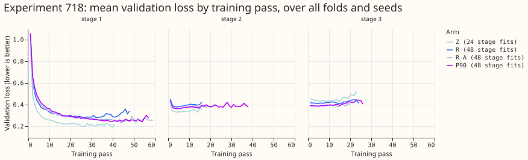
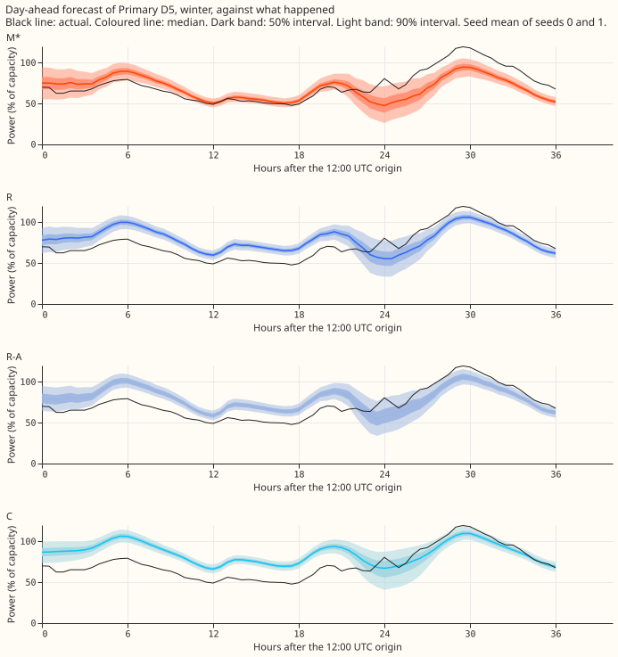
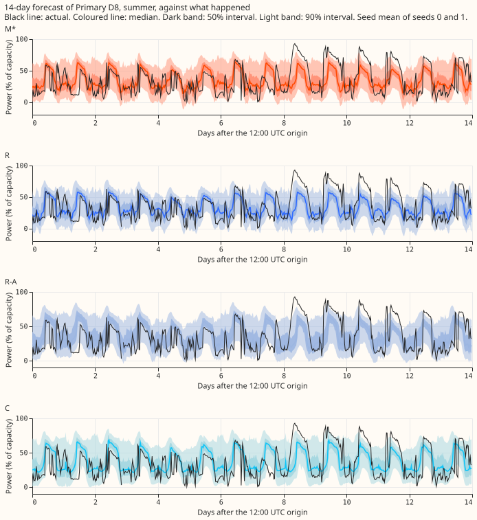

Does the axial-attention network forecast a Primary better when its history rows are the 14 past days with the nearest weather?
We asked whether a neural network that forecasts a primary substation's electricity demand does better when the past days it is shown are the days whose weather was nearest to the target day's forecast weather. The network is the axial-attention neural network of experiment 713. It forecasts the demand of 16 primary substations (the substations between NGED's 33 kV and 11 kV networks, called Primaries below) for days 1 to 10 ahead. As input it reads a matrix of 14 past days (the history rows) by 48 half-hours of the substation's own power, and it learns how much weight each past day deserves. Experiment 713 gave the network the last 14 days. Here, for each target day, we ranked the past 91 days by the distance between each day's weather and the target day's ensemble weather forecast, and gave the network the nearest 14. We compared the forecasts with two references: the network given the last 14 days, and the network given 14 random days of the same ages as the nearest 14.
The nearest-weather days forecast no better than the last 14 days at either group of Primaries. We scored 8 months of forecasts (2025-11 to 2026-06), with seeds 0 and 1. The score is the continuous ranked probability score (CRPS) in percentage points of each Primary's capacity, and lower is better. At the 6 Primaries that meter signed power (the six), the nearest-weather days scored 0.013 points below the last 14 days, and at the 8 Primaries that meter only apparent power in megavolt-amperes (MVA, the eight), they scored 0.069 points above. Both intervals include zero.
Verdict: not supported. Every interval below is at 98.75% (month-block bootstrap over 8 monthly folds), in CRPS points of capacity, and a negative number favours the nearest-weather days.
| Contrast | Group | Point and interval | Reading |
|---|---|---|---|
A1: nearest weather R minus last 14 days M* |
six | -0.013 [-0.088, +0.049] | no detectable difference |
| A1 | eight | +0.069 [-0.077, +0.212] | no detectable difference |
A2: R minus the same-age random placebo R-A |
six | -0.034 [-0.095, +0.050] | cannot tell |
| A2 | eight | -0.045 [-0.195, +0.059] | no detectable difference |
Two audit triggers fire at the six. The leave-one-Primary-out guard fails: D5 alone is -0.283
for A1, and the other five signed-power Primaries lie between -0.059 and +0.129. The guard that the
mean absolute error of the median forecast moves with CRPS also fails, and the leave-one-month-out
guard fails too. The cold-night guard (the score on cold winter nights) and the selection-swap guard
(the sign survives choosing rows with live-fair weather) were not scored, so the decision rule's
all guards hold field is false. The scores are ceilings for a live forecast, because the weather
distance reads ERA5 and CAMS weather for the past days and the stored ensemble forecast for the
target day, as experiment 713 documents. The maintainer waived experiment 713's known-answer gate on
2026-11-24, and this experiment's own gate passed (checks KS1, KS2, and KS3 on synthetic worlds).
A fresh Sonnet audit of the verdict found that not supported stands, and the risk that it flips
is low. The auditor re-derived A1 and A2 from the stored forecasts and matched the printed values
to within 0.001. Without D5, the six's A1 is +0.040 [-0.023, +0.095], so the sign flips to the
nearest-weather days being worse, and the reading moves from "no detectable difference" to "cannot
tell" because the upper limit of 0.095 just exceeds δ (0.094). Leaving out D9, D10, D11, or D14 at
the six also gives "cannot tell", because the interval widens while the point barely moves. At the
eight, only the version without D22 has an interval that excludes zero (+0.084 [+0.023, +0.140]),
and it fails the t-interval and noise-floor guards, so the reading stays "no detectable difference".
No single deletion reaches "gain", "small gain", "loss", or "clear loss", so the only other verdict
reachable by leaving one Primary out is inconclusive, at the six. The mean absolute error of the
median forecast and CRPS disagree at the six because D5 supplies the CRPS gain at the 5% to 25% and
90% to 95% quantiles while the median is flat; without D5 both are positive (+0.075 and +0.040). We
report "inconclusive without D5" as a sensitivity reading, and the pre-registered verdict stays not
supported. The audit did not rerun the leakage check or the retrieval-correctness check. The full
audit is in briefs/msa_architecture/f9_718_audit.md.
Further results, computed after the main scoring
The nearest-weather days are worse than the last 14 days at 9 of the 16 Primaries and better at 7. These readings are post hoc and report-only. The largest losses are at D12 (+0.207) and D4 (+0.140), and D15 (the short-history Primary, outside both groups) is -1.957.
The eight's monthly A1 swings about twice as much as the six's, and reverse flow is not visible at the eight. The eight are stored as apparent power, which has no sign, so the data cannot show reverse flow there. The standard deviation of the 8 monthly means is 0.174 at the eight (range -0.211 to +0.335) against 0.083 at the six. D8, the Primary the maintainer named as the reverse-flow case, is +0.010, and the eight without D8 are +0.078. D8's contribution is therefore not the reason for the eight's wider spread.
The network relies on its history rows. Masking all history power at prediction (a read-out with
no refit) raises the error of R by 0.30 points at the six [0.19, 0.41] and 0.30 at the eight
[0.18, 0.45], at 95%.
The nearest-weather days forecast worse than the mixture of experiment 719. Experiment
719 gave the network 5
weather-nearest days, the 5 most recent days, and 4 days with the target day's weekday (the mixture
U). Report-only at 95%, R minus U is +0.043 at the six [+0.005, +0.080] and +0.110 at the
eight [+0.028, +0.193]. R minus the placebo neural network P (14 random days of the past year)
is -0.163 at the six [-0.256, -0.068] and -0.093 at the eight [-0.220, +0.022]. The nearest-weather
days therefore forecast better than 14 random days of the past year at the six.
Plots
- Contrasts by Primary.

- Ages of the retrieved rows, fold 2026-01.

- Read-out weight by row age, from one review.

- Attention maps of
Rat D5 and D8, from one review.

- Training and validation loss by pass, from one review.

- Day-ahead and 14-day forecasts of
M*,R,R-A, and the Candidate at D5 and D8 in winter and summer.

Checks
- Triggers. Audit trigger 3 (the error of the median moves against CRPS) and trigger 4
(leave-one-Primary-out flips the reading) fire at the six. Triggers 1 (placebo and
Zrule) and 5 (nested arm beating its container) did not fire on the screen. - Review of the new analysis code. One Opus review
(
briefs/msa_architecture/f9_result_code_review.md) covered the post hoc, masked-history, loss-plot, attention-plot, andsecondarycode of both parts. It reproduced the printed A1 numbers and the D8-only value of +0.010. It found two faults in the attention plots (ERA5 weather in the batch, and absent rows drawn as real rows of age 2), and the charts were redrawn and viewed after the fix. The review did not recompute the masked-history scores or A2. - Not done. The selection-swap read-out was not built, so the cold-night guard and the selection-swap guard are unread.
- Unlogged events. NGED's load-shift logs may miss events, so the clean-lag rows may hold events no label covers.
The plan as registered
The sections below are the plan as registered before any fit, followed by the method, departures, reviews, and files.
We ask whether the axial-attention network of experiment 713 forecasts a Primary substation's demand better when its 14 history rows are the 14 past days with the weather nearest to the target day's forecast weather, instead of the last 14 days. This is part 1 of follow-up F9. Part 2 (experiment 719, on its own page) tests a union of three retrieval measures. This page is the plan: no neural network has been fitted, and every number below is a design value or a figure from an earlier experiment. The code is written and unit-tested on the CPU only.
The honest expectation is a tie or a small loss. The exploration of F9 (a CPU-only study that
averaged rows instead of attending to them) found that a plain mean of the rows of arm R is no
better than a plain mean of the last 14 days (8.89% against 8.88% of capacity, MAE). Experiment
713's interim screen puts M* only 0.13 points (the six) and 0.31 points (the eight) ahead of 14
random days of the past year, so the room between a good and a poor choice of rows is a few tenths
of a point. The maintainer's instruction shapes the design.
Why this runs
This experiment runs on the maintainer's instruction, which the demand protocol accepts as the
approval. On 2026-11-23 the maintainer approved F8 and F9 ("yes, please run these autonomously at
the appropriate time.") and, relayed by the manager, said: "I'd be generous to the similar days
idea. I'm optimistic that the MSA will be able to extract information from similar days that a
simpler approach can't." Arm R is included although the exploration found no gain for a mean of
its rows, because the exploration measured a mean and this experiment measures what attention
extracts.
Experiment 713's condition for a retrieval follow-up is met on its interim screen. Experiment
713's own scorer, on the 4 screen folds with the gate waived, gives M1 minus P of -0.131
[-0.198, -0.053] at the six and -0.305 [-0.610, -0.075] at the eight (so H2 is clearly negative), and
M1 minus the Candidate of -0.088 at the six and -0.073 at the eight (so M* is not clearly worse
than the Candidate). The screen stop rule reads False. The final reading waits for experiment 713's
verdict.
The instruction is not assumed to survive every verdict of experiment 713. If experiment 713
ends refuted, F9 stops and asks the manager. Whatever the verdict, the manager obtains a one-line
confirmation from the maintainer when the verdict is known, and records the confirmation in this
page before the first scored fit. If experiment 713 ends not supported without the section 1.8
condition, this page says so. If experiment 713's screen stop rule fires, F9 stops and asks.
F9 is not an embedded-PV experiment, and its stop-rule counts are recorded for completeness.
Experiment 713's design counts 5 not supported and 1 refuted verdicts on attention or sequence
networks over power history, which exceeds the protocol's limit of three, so this page prints its
contrasts at every one of the 16 Primaries. Similar-day retrieval outside neural networks has 1
counted verdict since its last reset: experiment 471 (not supported) after experiment 145 (small
gain).
What is compared
Terms. A block is a 24-hour row of 48 half-hours that starts at 12:00 UTC. The age of a block is the number of days from the block's start to the contract origin (12:00 UTC on day D). A pool is the set of blocks a retrieval rule may choose from. "The six" are the signed-MW Primaries D5, D9, D10, D11, D14, and D16, and "the eight" are the MVA-only Primaries D2, D3, D4, D8, D12, D19, D21, and D22. "The network" always means the axial-attention neural network.
| Arm | History rows | Seeds | Role |
|---|---|---|---|
M* |
Ages 2 to 15 (experiment 713's M1) |
Stored | Control; never refitted |
P |
14 random blocks of ages 16 to 379 | Stored | Report-only reference |
Z |
Ages 2 to 15, through F9's code | 0, 1 on 4 folds | Repeat of M*; measures refit noise |
R |
The 14 blocks nearest by the weather distance, ages 2 to 91 | 0, 1 (then 2 to 4) | Treatment |
R-A |
14 random blocks whose ages match the 14 rows of R, from the 90-day pool and outside R's rows |
As R |
Counted placebo |
P90 |
14 random blocks of ages 2 to 91, uniform | 0, 1 only | Report-only placebo |
The weather distance between the target block and a pool block is the root of the summed squared difference of the 7 standardised weather columns at the 48 half-hours, plus 1.0 times the share of the 48 columns whose day type differs. The target row's weather is the ENS-mean of the 00Z run of day D (stages 2 and 3 and at prediction) or ERA5 and CAMS (stage 1). The pool block's weather is ERA5 and CAMS at its own half-hours. The distance uses the fold's standardiser and is computed in float64. Ties go to the younger block when two distances differ by less than 1e-9 relative. A block is eligible when at least 24 of its 48 half-hours hold power that the 27 h rule makes visible and that is finite and unflagged.
Every F9 arm is fitted with all three stages of experiment 713's recipe from the seed's own
initialisation, and not from the stored stage 1 state of M*. Stage 1 is where the network
learns what a history row is, and a network whose stage 1 saw only the last 14 days would have 66 to
224 optimiser steps of stage 2 in which to learn to read retrieved rows.
Three parameter tables of experiment 713 are indexed by an age bucket instead of the slot. The
tables are the age embedding, beta_age, and the key bias. Ages 2 to 15 keep one bucket each, and
ten further buckets cover older ages, so an F9 network with rows of ages 2 to 15 is experiment 713's
network exactly. The change adds 730 parameters (0.6%).
Reference rows, never refitted: the Candidate, the climatology, and the manual heuristic and BG2 where stored rows cover the scored keys, through experiment 713's scorer.
Leakage and the weather look-ahead
Selection may read only inputs that exist at the origin: the target row's ENS weather, the
calendar, each pool block's age, whether a pool block holds power at least 27 h old, and the pool
block's ERA5 and CAMS analysis weather. The last item is a lab shortcut, because ERA5 and CAMS
arrive about 5 days late, so the weather of blocks of ages 2 to 5 could not be read in a live
service. Every score of R is therefore a ceiling for a live forecast. No measure reads a power
level. The row tables are built from the prediction-phase power array, and a poison check proves
that the entries equal those built from the train-phase array. The weather look-ahead statement of
experiment 713 is printed for every fit family, with one line per retrieval measure.
Decision rule and verdict
Each part has four counted readings, so each interval is read at 98.75%, as in experiment 713.
A counted contrast is treatment minus reference in CRPS on the headline band (leads from 24 h up to
but not including 240 h), over the 8 folds, from seed-averaged forecasts, with
studies.bootstrap.bootstrap_difference_at_level and 100,000 resamples. The three guards are
experiment 713's. The noise floor and the detectable difference δ depend on the seed count:
| Seeds per arm | Noise floor, six | Noise floor, eight | δ, six |
δ, eight |
|---|---|---|---|---|
| 5 | 0.034 | 0.090 | 0.06 | 0.16 |
| 2 | 0.054 | 0.142 | 0.094 | 0.25 |
The seed count is fixed now: 5 seeds for R and R-A if experiment 713's phases 8 and 9 run, and
2 seeds otherwise. No seed is added after a contrast on all 8 folds is read. The smallest gain
worth porting is 0.02 points of capacity.
| Order | Group reading | Condition |
|---|---|---|
| 1 | clear loss | L > +0.02, and all three guards hold |
| 2 | loss | L > 0, and all three guards hold |
| 3 | gain | U < 0, D ≤ -0.02, and all three guards hold |
| 4 | small gain | U < 0, and the seed guard holds for at least 4 of 5 seeds (both of 2) |
| 5 | no detectable difference | L > -δ and U < +δ |
| 6 | cannot tell | anything else |
Here D is the point estimate and [L, U] the 98.75% interval. The verdict rows are experiment 713's:
refuted for a "clear loss" in either group; not supported for a "loss" in either group or "no
detectable difference" in both; supported for "gain" in both groups with the upper limit of A2
below 0 in both, the placebo R-A not a "loss" against M*, and the guards below; partly
supported for a "gain" in one group, or in both with a placebo or guard condition failing; small
gain for "small gain" with no "gain" or "loss" and the point estimate of A2 below zero in each such
group; inconclusive otherwise. The counted placebo is R-A and not P90, because arm R takes
28% of its rows from ages 2 to 15 and a uniform draw from 90 blocks takes 16%, so a uniform placebo
would credit the weather distance with a recency gain.
Reachable thresholds. The monthly spread of M1 minus P is about 0.33 at the eight and 0.10
at the six. The plan expected "no detectable difference" at the eight to be out of reach, because
the 98.75% interval is wider than δ. A "gain" at the eight needs D below about -0.4. The plan
also expected that a null part would end inconclusive. The run read "no detectable difference"
for A1 at both groups, which the decision code maps to not supported.
Screen, audit, and stop rules. The screen is experiment 713's four folds (2025-11, 2026-01,
2026-03, and 2026-06) with seeds 0 and 1, and every screen number is labelled interim. If A2 is
positive in both groups on the screen, audit trigger 1 fires before the other four folds run. The
audit reruns the leakage, retrieval, placebo, and row-order checks on the fitted states of the screen
folds, prints the read-out weights α by measure and by age bucket, and checks that the rows of the
scored forecasts equal the row table. A clean audit lets the other four folds run without a further
decision, and a defect goes to the manager. The part stops, and is written up from the screen as
not supported, if A1 on the screen is above +0.15 in both groups, or above +0.10 in both groups and
positive in at least 3 of 4 folds in both groups. Z minus M* above 0.076 at the six or 0.20 at
the eight in absolute value fires audit trigger 1 before any A1 is read. A reading on the four folds
that the exploration did not tune on (2025-12, 2026-02, 2026-04, 2026-05) is printed at 95% and
labelled report-only.
Known-answer checks and worlds
Nine wiring checks (KR1 to KR9) and three world checks (KS1 to KS3) gate the first real fold, and
every threshold is fixed before any fit. KR1 is nesting (an F9 network with rows of ages 2 to 15
and M*'s state reproduces M*'s forecast within 1e-6 of capacity). KR2 is the leakage poison
(power after the origin and weather after the issue time set to 1e6 and to NaN leave every row
table unchanged). KR3 is retrieval correctness against an independent NumPy recomputation. KR4
covers the placebo draws. KR5 shows that permuting the history rows leaves the output unchanged. KR6
is a bit-identical copied training loop. KR7 counts parameters and buckets. KR8 is the look-ahead
statement. KR9 reproduces experiment 713's stored scores.
World WS makes a similar day informative by construction, and world WN is the negative control.
In WS the power is 0.5 plus a level that only a past block of the same synthetic weather regime
reveals. KS1 needs P90 minus R and M minus R to be at least half the gap that a NumPy
reference computes. WN has no informative regime, and R minus M must be within 0.005 once the
learnt-function precondition holds. A passing world shows that retrieved rows reach the network and
the buckets are wired. It does not show that real similar days carry information.
Compute
The plan for part 1 is about 13 GPU-process-hours with seeds 0 and 1, within a shared ceiling of 23.5 for both parts. A 15-row fit took 317 s alone with a peak of 3.2 GB in experiment 713. The row tables are built on the CPU, in about 10 CPU-hours for both parts (see the departures), and use no GPU time.
Disclosures
- Experiment 713's known-answer gate failed KA3 and KA12 and was waived by the maintainer on 2026-11-23. F9's own gate tests a different capability in a different world and does not repair experiment 713's gate.
- Arm
Ris tested as the design of experiment 713 specifies, on the maintainer's instruction, with two readings fixed (the share of columns for the day type, and the fold's standardiser). - The pool blocks' weather is ERA5 and CAMS, a lab shortcut, in the distance and in the tokens.
- A null result may come from slow learning, and the known-answer world trains its encoders while the real arms freeze the Candidate's.
- The date-time encoder holds calendar columns, as in experiment 713.
Method
The experiment is planned and has no fitted result yet, so these bullets describe the design.
- Architecture: experiment 713's network, with the three slot-indexed tables replaced by an age bucket and a per-sample key bias.
- Training regime: all three stages of experiment 713's recipe from the seed's initialisation, monthly refits over 8 folds (2025-11 to 2026-06), seeds 0 and 1.
- Measurement: CRPS in points of capacity on experiment 713's row set, scored against the cleaned power; month-block bootstrap intervals; no valid time on or after 2026-07-01 is scored.
- Standing practices followed: monthly refit; cleaned data; the short-history cut; fitted states saved outside git; stored forecasts reused as controls; a screen on four folds first; forecast example plots. A stated departure: the date-time encoder holds calendar columns, as in experiment 713.
Departures from the design
The code departs from the design in these places, each chosen to keep experiment 713 unedited, to keep a check independent, or to follow the design where experiment 713's code does not.
- The weather of the pool is read from experiment 713's float16 standardised array and converted to float64. The design asked for float64 from the source rows. The table builder and its independent recomputation read the same array.
- Each placebo draw is seeded by the placebo seed, the Primary, the origin day, the lead day, and an arm tag. The design names the first four. The arm tag keeps the draws of different placebo arms independent.
- The negative control "a pool that admits the block of age 0" is a block of age 1 under a power cap of 0, because the block of age 0 lies beyond the grid index that a cap of 0 exposes.
- The newest-row dropout is applied after experiment 713's
Source.assemble, to the rows of age 2, so that experiment 713 stays unedited. - The 27-row arms have more rows than the 24 age buckets, so a placebo draw for them can put two rows in one bucket.
- Each row table stores the selected weather distance as a float32 array,
distance, and its provenance: the hash of the builder's code, the phase the builder ran in (read from the loaded fold, not a constant), the arm, the month, the standardiser fingerprint, a digest of the inputs (the pool weather, the day types, and the ensemble table before the fold's cutoff), and the--limit-daysvalue. The builder, the fit, and the prediction refuse a table whose provenance differs. A table built with--limit-daysis rebuilt by a full build and refused by a fit. - The tolerance of the independent recomputation (KR3) for a rank swap between tied blocks is a relative 1e-9, as in the design. KR4 requires that the placebo's class counts equal the treatment's in at least 90% of samples, because a class that runs out of eligible blocks passes its shortfall to an older class. KR4 also prints the mean weather distance of the replaced rows beside the treatment's. KR8 reads the finite power flags and its own visibility rule, not the builder's eligibility function, and exempts the 14 fixed rows of ages 2 to 15, which the design does not filter by eligibility.
- With 2 seeds, the reading "small gain" needs both seeds to agree in sign, as design section 7.3 states. Experiment 713's scorer accepts 1 seed of 2 for that reading. This experiment requires both, and the manager approved the stricter rule. The rule makes "small gain" harder to reach. A reading that fails that row falls to the next row of the table, so the plan expected that with 2 seeds it would fall to "cannot tell". The run reached "no detectable difference" for A1 at both groups. This experiment's decision code applies the rule and leaves experiment 713's scorer unedited.
- Audit trigger 5 (a nested arm beats its container) fires only when the nested arm is better in both Primary groups, because the design names no group.
- The tables of all arms of a fold are built in one pass, and each weather distance is computed once
for the 379-day pool and shared by the arms that read it. Arm
UXis built only for the two folds on which it is fitted. On 6 origin days of fold 2025-11 the 9 arms cost 1.30 CPU-hours per fold when extrapolated to the fold's 2,267 origin days, which is about 10 CPU-hours for 8 folds. That extrapolation is an upper bound, because the pools of armsUandU27are truncated for the first 364 origin days. The slice run peaked at 6.76 GB, almost all of it the fold's load, and a full build is estimated at about 7.9 GB, so it runs under a 12 GB limit. The build enforces a cap of 3 CPU-hours per fold withRLIMIT_CPU. The design estimated 22 CPU-hours, and the estimate of the second code review for a build without reuse was 60 to 90. - The sequence of the sparse world's last era was: the designed layout (a last era of 91 days)
failed the pre-check, because the reference gap of arm
Uon the real grid of fold 2025-11 was 0.0000008 against a minimum of 0.010. ArmU's 379-day pool then crosses the era boundary at every held-out origin. The last era was widened to 400 days before any world fit ran, and no fitted result had been seen. With 400 days the gaps on that grid are 0.043 (R), 0.039 (Z), and 0.064 (U). The widening leaves 4,620 stage 1 training samples instead of 5,460 (15% fewer) and 18.0 steps per pass, so 2,160 steps over the 120 fixed passes instead of 2,760. About 40% of training samples have a 379-day pool that crosses an era boundary, whereas no held-out origin does, so a network that learns to discount old matching rows in training may under-use them at the held-out origins. The reference gap of 0.064 assumes full use, and the reference gap with only rows up to 91 days old is 0.041, so KS2 can still fail on a correct network, although less likely than under the designed layout. The change is a gate-world change made before any fit, and it amends design section 10.2, whose rule is that a failed pre-check goes back to the designer. The worlds also zero thecoviddate-time column, so that no arm can read an era from it. - The known-answer gate writes a result record in every case, with the per-pass trajectories of
every fit, and deletes an earlier gate file when it starts. It writes the gate file only when
every check passes and KS3's difference tests were read. The gate file is valid only for the
current text of the gate's scripts, by a gate hash. The override
--manager-accepts-unread-ks3takes the path of the manager's written decision, and the note's path and hash go into the result record, the gate file, and every fit log. - The fit asserts, by sha256 before and after, that the files of experiment 713 that it reads are unchanged: the selection file and the job's pre-trained encoder file. It does not watch the other files that experiment 713's jobs write.
- Not written: the sparse world with a power pool (
WS+),U27in the sparse world, the frozen- encoder world, audit triggers 2, 3, 4, and 6, and the swap tables of theftarm. The cold-night slice and the swap points are inputs that the scorer takes from the caller. Without them thesupportedguard fails by rule, so a missing input cannot produce a positive verdict. e00718_check_real.pyruns KR2 (a), KR3, KR7's batch assembly, and KR8 on the last origin days of one real fold on the CPU, and a table-level poison check that rebuilds the tables from power that is NaN or filled after the visibility cap.e00718_check_built.pyruns KR8, KR3 on 1,000 samples per arm over all days, KR7's buckets, and KR1 (a) on a fold's built tables, and--kr2cruns KR2 (c) in a training-phase process. KR1 (a) compares the CPU forecast with a forecast stored from the GPU, so that reading, labelled "CPU smoke", uses a tolerance of 1e-5 (the CPU path differs by about 6e-6). The required KR1 (a) keeps the design's 1e-6 and runs on the GPU as a short job (e00718_check_built.py MONTH --kr1a-gpu); a pass on every fold is a precondition of the gate. The candidate-table half of KR9 is not yet run.
Reviews
An Opus agent reviewed the design before this page was written, and the design was revised after it. Still to come: an Opus code review of each new script before any fit, a second review of the fixed code, the known-answer gate, a result review, an audit if a trigger fires, a numbers review, and a prose review.
Files
Merge order: experiment 713 (pull request 402) merges first, then this experiment, then experiment 719. Experiment 719 imports the code in this folder. This page does not link to experiment 719's page, which does not exist until experiment 719 merges.
data/ml-experiments/briefs/msa_architecture/f9_design.md,f9_design_review.md, andf9_design_triage.md(read, private): the design that this page condenses.ml-experiments/00718-msa-similar-day-retrieval-part-1-weather-distance/: the code for both parts (retrieval and its independent recomputation, network, batches, training, fit, prediction, read-outs, the worlds and known-answer gate, the counted contrasts and decision rules, the figures, and a report script that prints the result tables), written and unit-checked on the CPU. No fit has run, and no table has been built on real data.- Read from experiment 713 (pull request 402):
the stored states and forecasts of
M*andP, the inputs adapter, the fold statistics, and the scorer. - Written by this experiment (to be created): fitted states under
data/ml-experiments/00718-msa-similar-day-retrieval-part-1-weather-distance/work/and predictions underpredictions/, never committed.